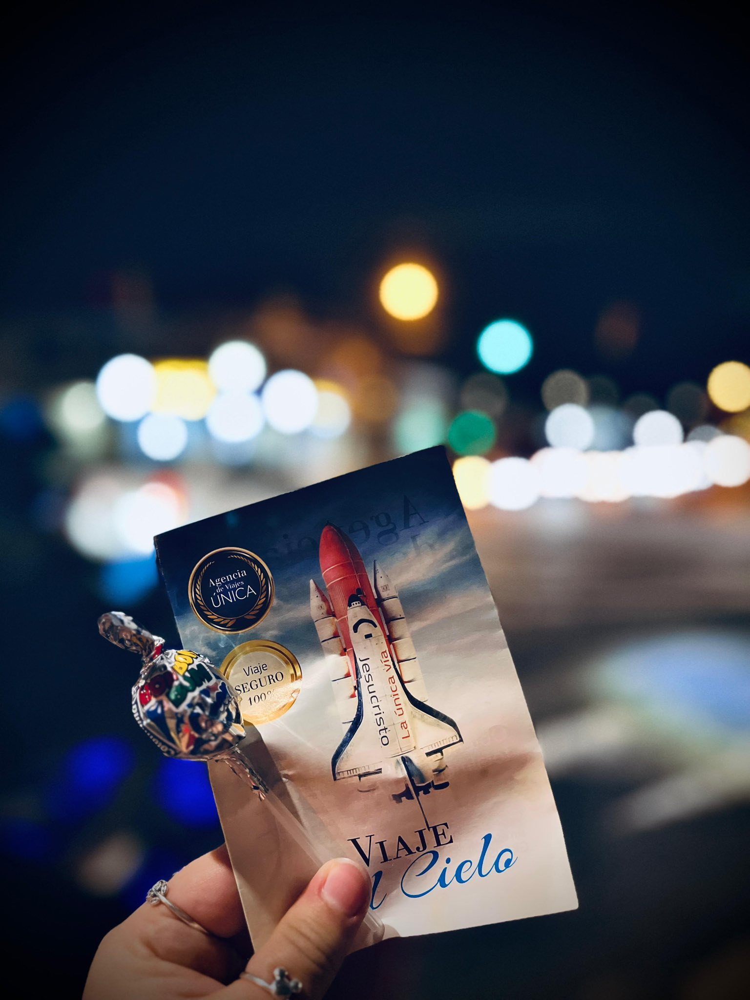
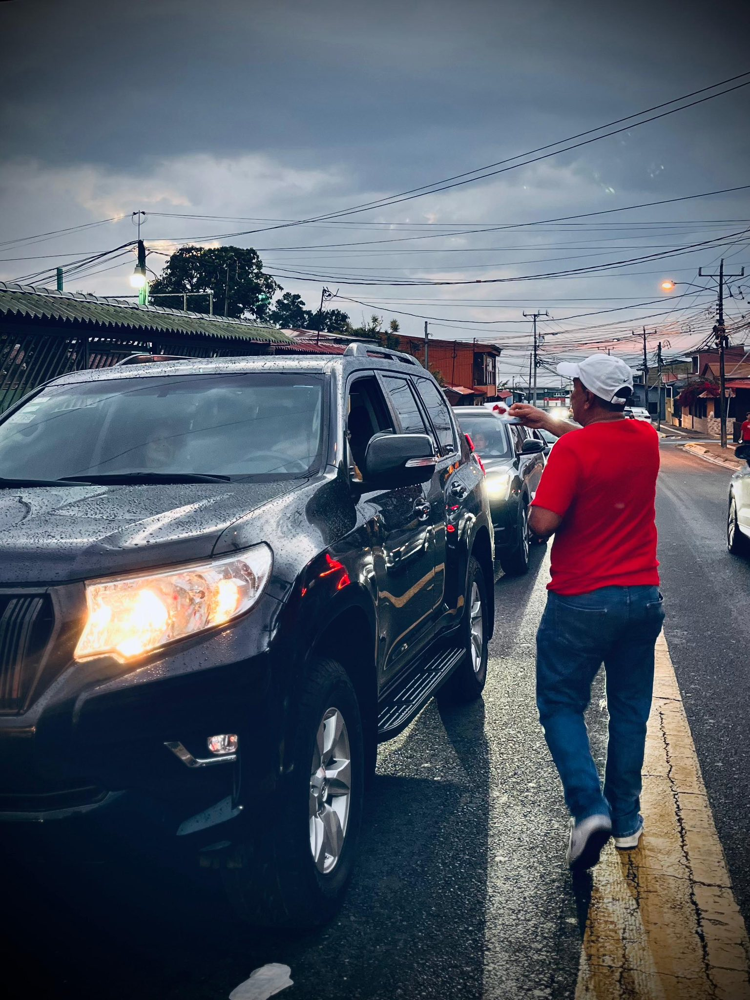
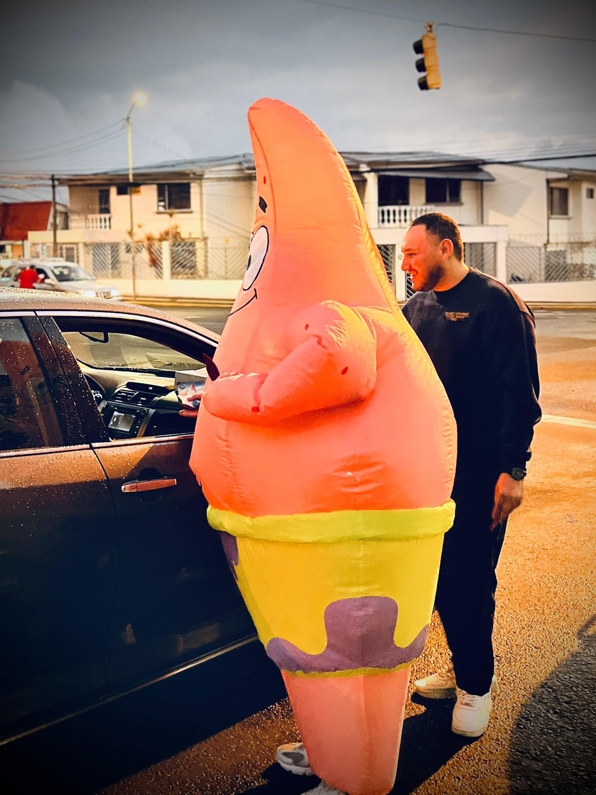
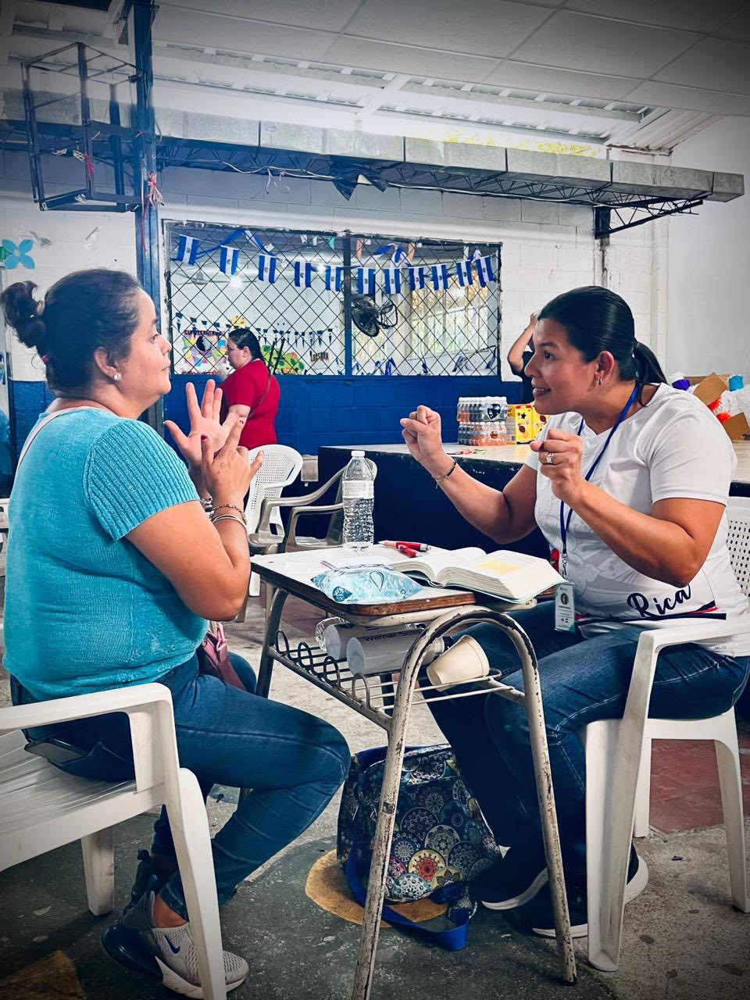
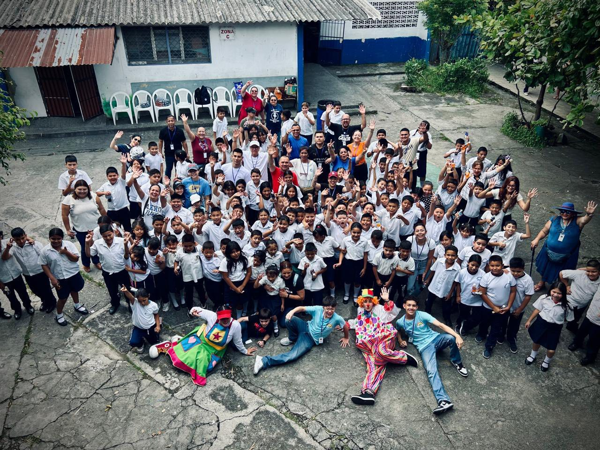
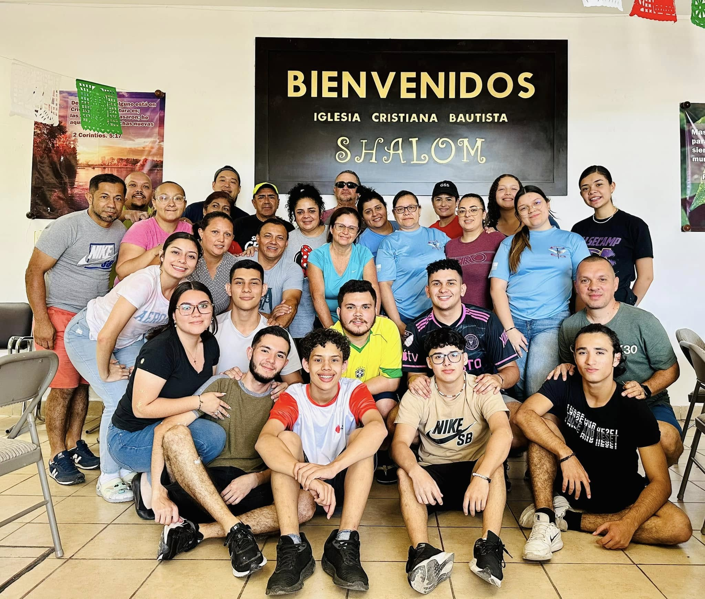
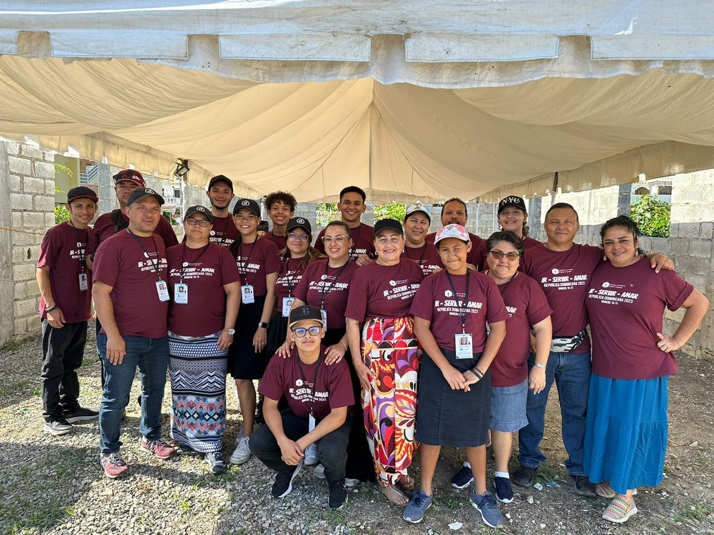

Llevando esperanza al mundo
Evangelismo local, viajes misioneros y apoyo a misioneros alrededor del mundo.
Evangelismo
Salimos a las calles, parques y comunidades para compartir el amor de Cristo. A través de actividades creativas, servicio social y relaciones genuinas, buscamos impactar vidas con un mensaje de esperanza.

¿Qué hacemos?


Viajes Misioneros
Organizamos viajes a diferentes regiones para servir, construir, enseñar y acompañar comunidades que necesitan apoyo. Cada viaje es una oportunidad para crecer y dar.

Nuestros viajes incluyen



Misioneros alrededor del mundo
Apoyamos de manera continua a misioneros que sirven en diferentes naciones. Los respaldamos con oración, recursos económicos y acompañamiento espiritual.
Hermano Yohel Arce
Plantando iglesias y realizando discipulado transcultural en España, Italia y en Europa general. Compartiendo el evangelio en una de las ciudades más diversas de Europa.
Hermano Andrés
Sirviendo en comunidades vulnerables con educación, evangelismo y asistencia social. Transformando vidas a través del amor de Cristo.
Hermano Melver
Liderando proyectos de construcción y campañas de ayuda médica en comunidades rurales de Costa Rica y América.
¿Quieres ser parte de la misión?
Ya sea orando, dando o yendo, hay un lugar para ti en lo que Dios está haciendo alrededor del mundo.